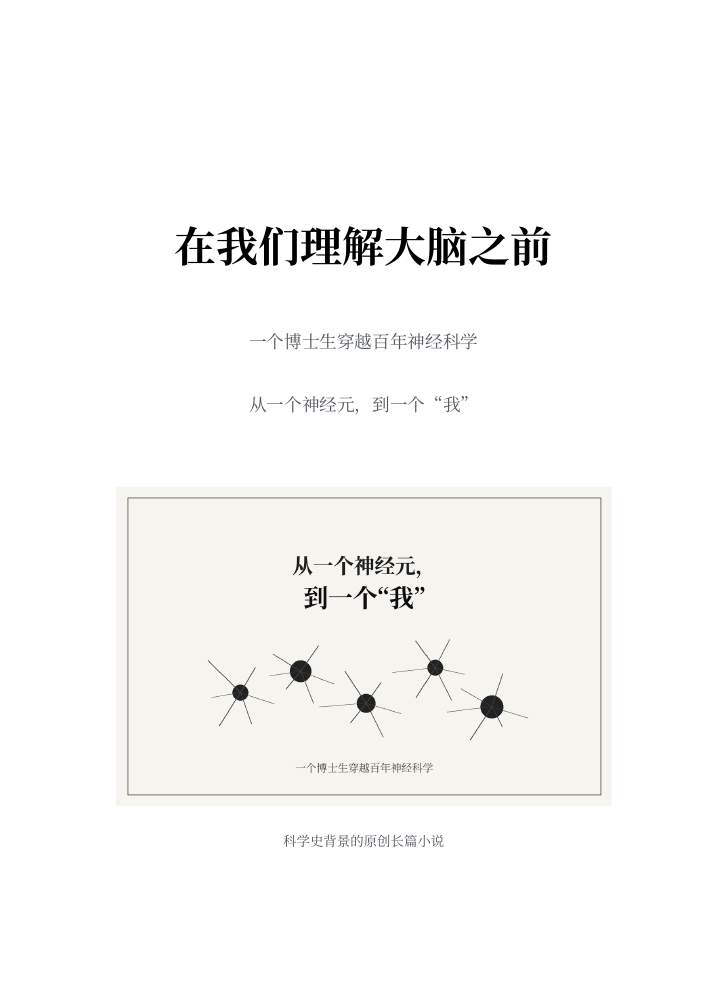

生命科学 · 科学史 · 穿越小说
在我们理解
大脑之前
大脑之前
一个博士生穿越百年神经科学
24章 · 六部 · 完整图文阅读版
ABOUT THE BOOK
一个正在为论文和毕业烦恼的博士生，走进那些重大发现尚未拥有名字的年代。他跟随研究者等待实验、讨论错误，也慢慢重新理解自己一直研究的大脑。
24章正文及分章参考文献已公开。章节配图已按作者授权随正文公开展示。部分正文有人机协作写作过程，科学史引用仍需最终核验。

一个正在为论文和毕业烦恼的博士生，走进那些重大发现尚未拥有名字的年代。他跟随研究者等待实验、讨论错误，也慢慢重新理解自己一直研究的大脑。